Mitophagy & quality control
How cells recognize, recycle and renew mitochondria to preserve cellular health.
Exploring mitochondrial quality control, mitophagy and the cellular mechanisms that shape brain ageing and neurodegeneration.
Explore our research →The Palikaras Lab investigates how cells maintain mitochondrial and neuronal homeostasis across the lifespan. We combine genetics, advanced imaging and complementary experimental models to understand the mechanisms of ageing and neurodegenerative disease.
Laboratory of Physiology · Medical School · National and Kapodistrian University of Athens, Greece
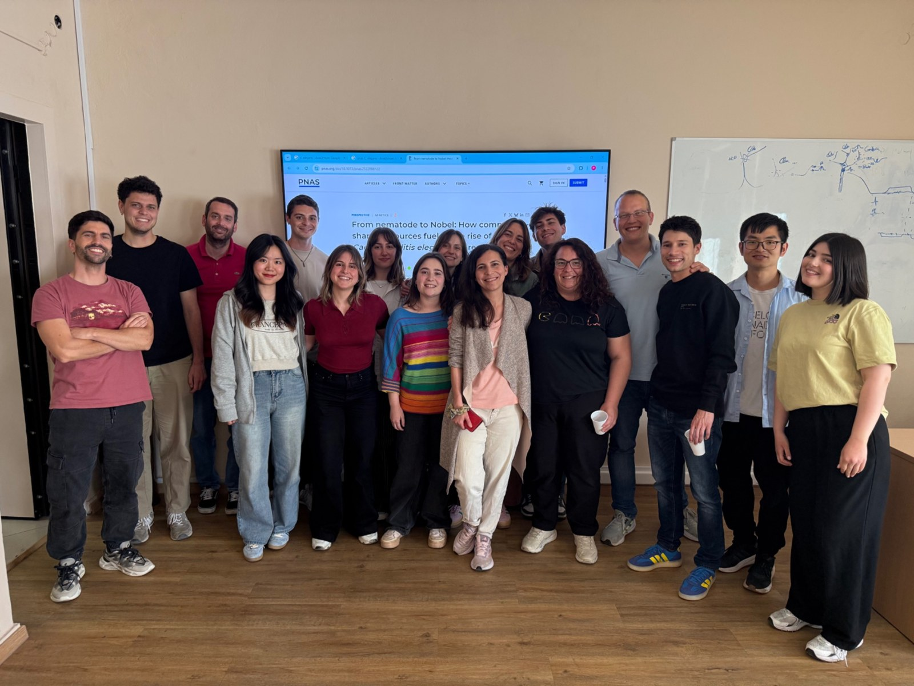
How cells recognize, recycle and renew mitochondria to preserve cellular health.
Understanding the contribution of mitochondrial turnover to neuronal communication and function.
Investigating mechanisms of neuronal resilience in ageing and disease models.
Our laboratory combines genetics, fluorescence microscopy and experimental models to investigate mitochondrial quality control and neuronal resilience.
Scientific images supplied by the Palikaras Lab. Descriptive labels will be confirmed before publication.
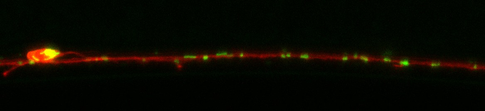
Selected images generated through our research. Captions are provisional and can be replaced with detailed scientific descriptions.
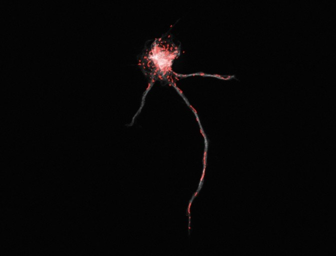
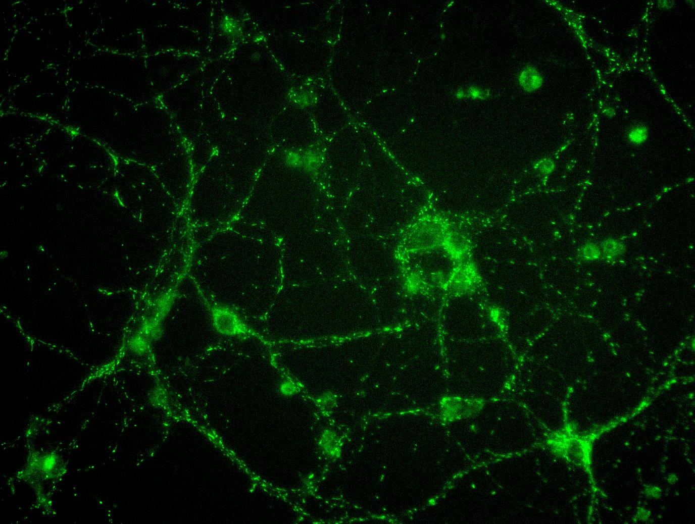
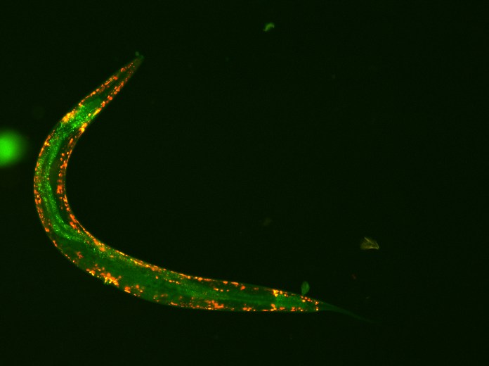
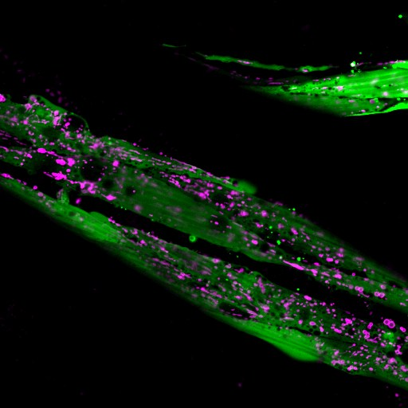
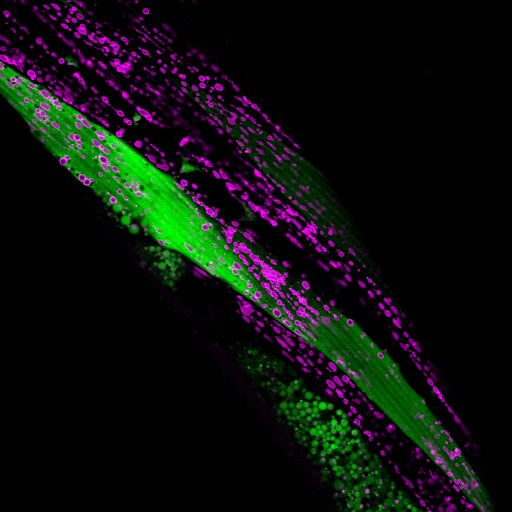
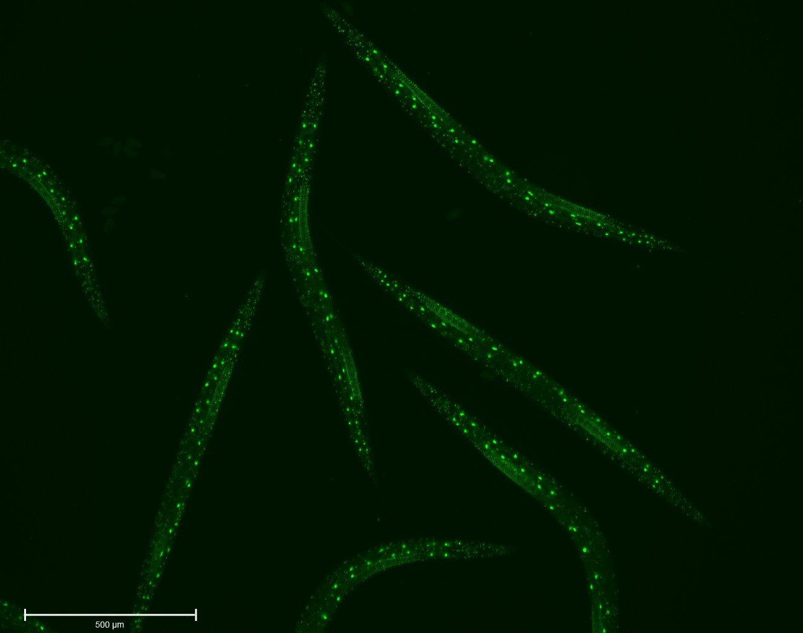
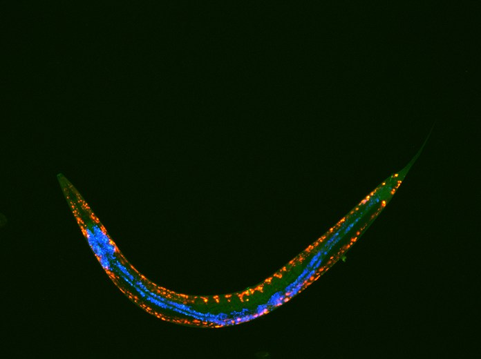
Researchers and students advancing our understanding of mitochondrial and neuronal biology.
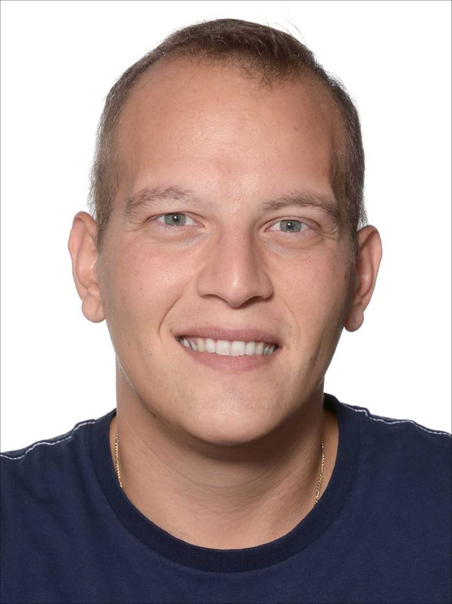
Principal Investigator · Associate Professor
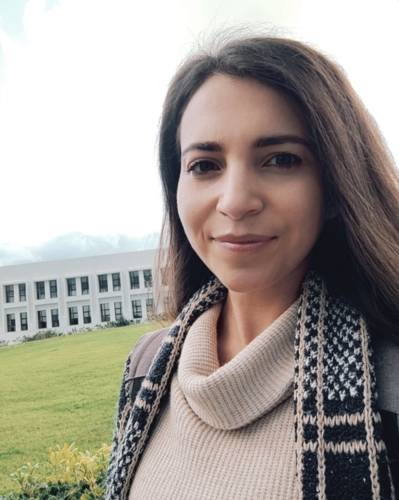
Postdoctoral Researcher
Postdoctoral Researcher
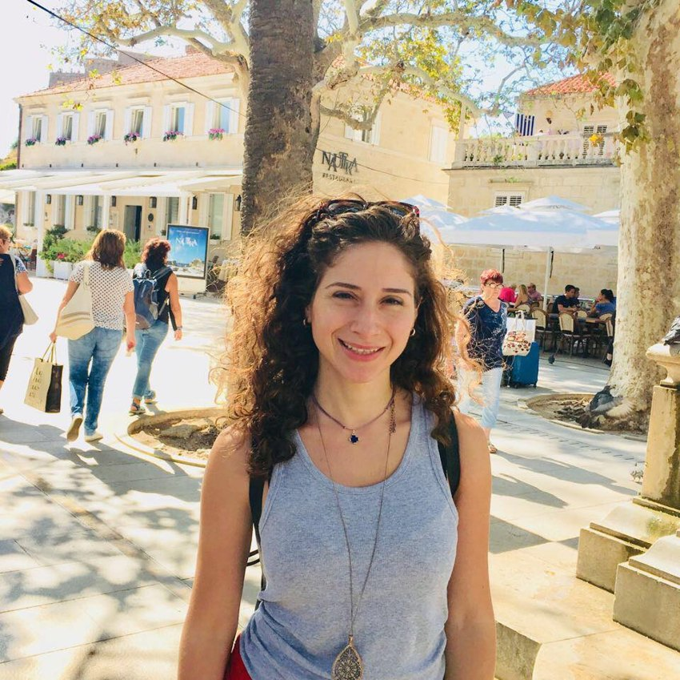
Postdoctoral Researcher
Graduate Student
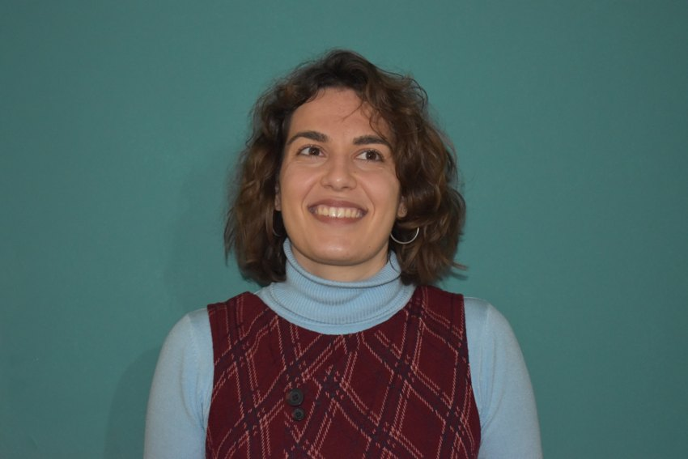
Graduate Student
Graduate Student
Graduate Student
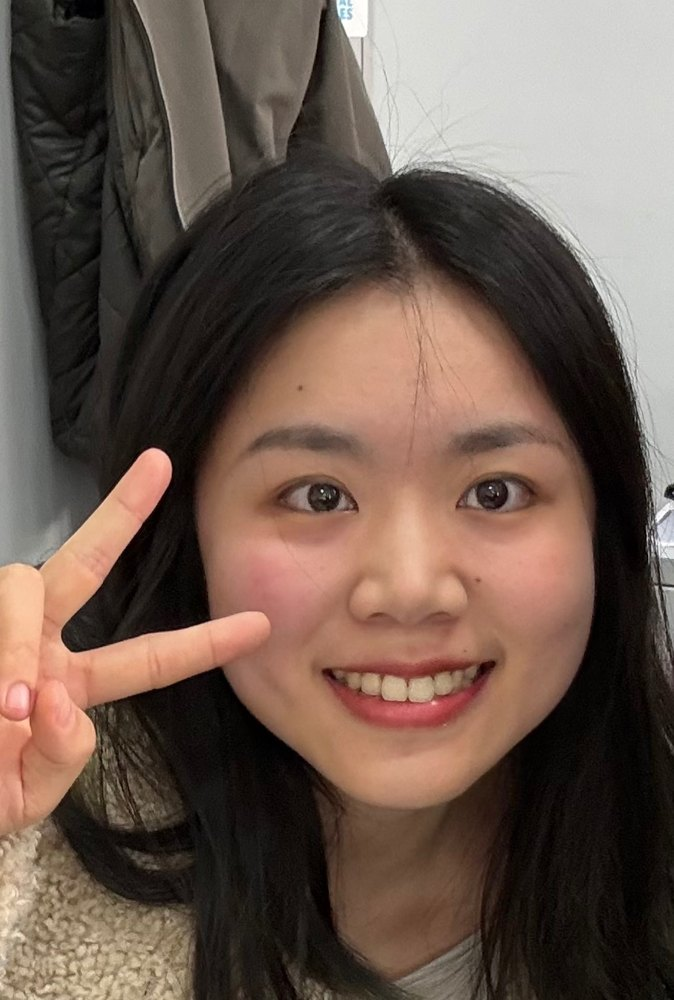
Graduate Student
Graduate Student
Graduate Student
Graduate Student
Our work spans mitochondrial dynamics, mitophagy, neuronal physiology and ageing. A verified publication list with journal links and DOIs will be added here.
We are grateful for the support that makes our research possible.
Funding acknowledgments and official logos will be checked before publication.
Laboratory of Physiology, Medical School
National and Kapodistrian University of Athens
75 Mikras Asias, 11527 Athens, Greece